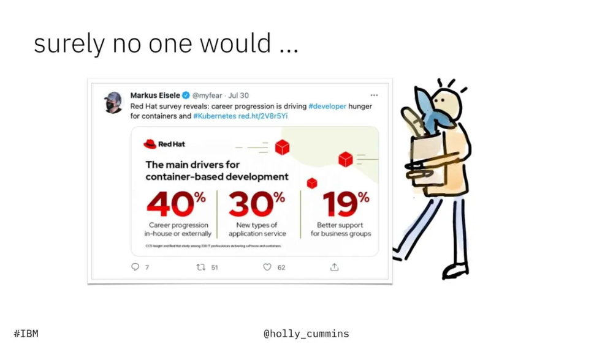
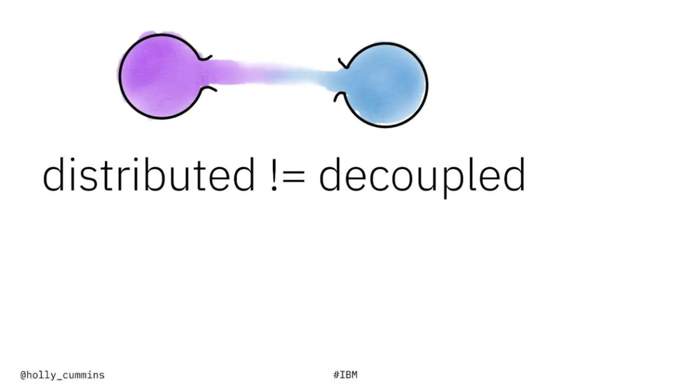
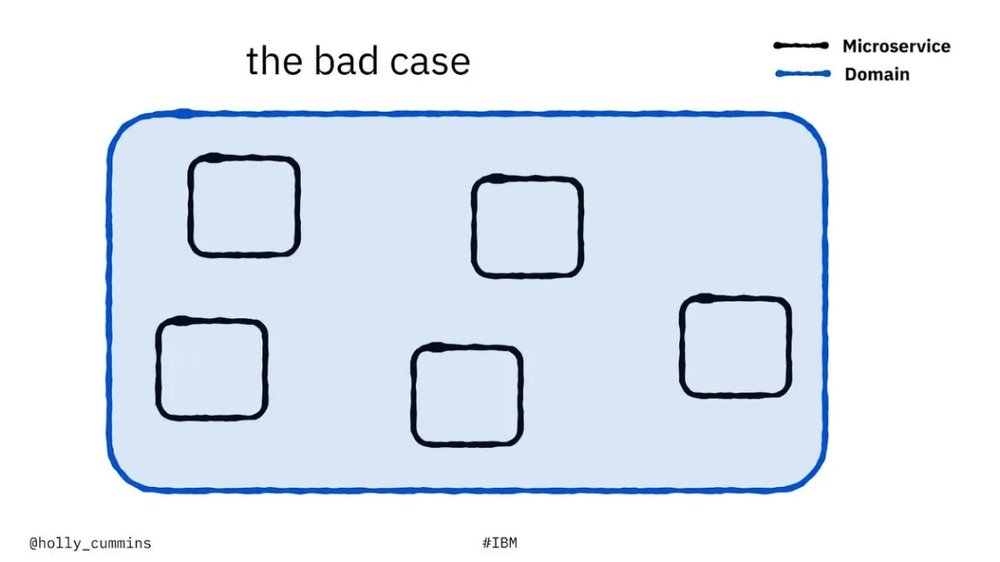
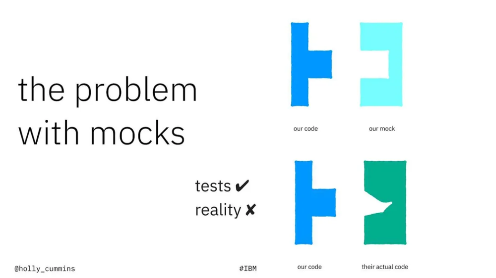
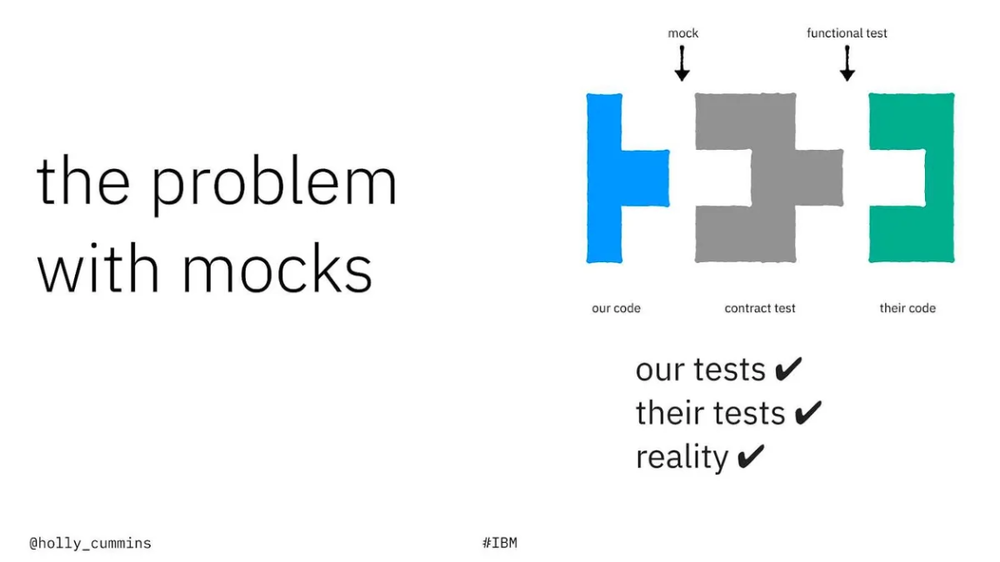
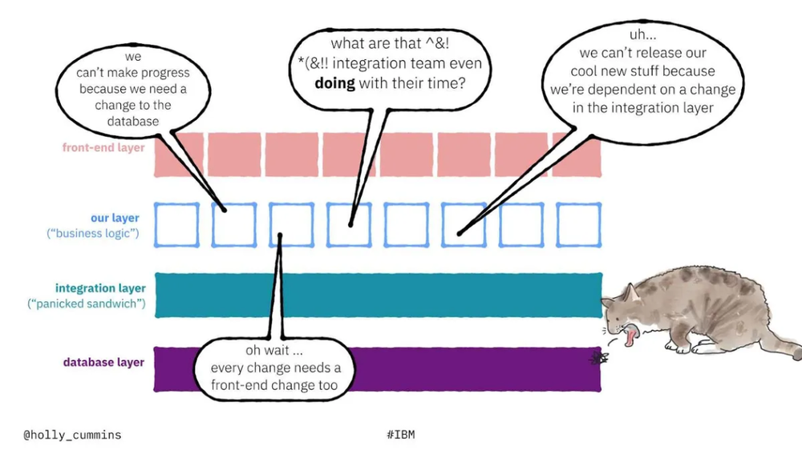

本文译自 7 Ways to Fail at Microservices，作者总结了她见过的导致微服务落地失败的一些情况，并提出了 7 个重要的关注点以引导大家来尽量避免。译者是在工作闲暇时间完成的翻译，其中难免有不当之处，请读者指正。
本文主要观点：
- 微服务是一种手段，而不是目标
- 分布式并不能保证解耦性
- 合约测试（Contract Testing）是任何微服务架构的重要组成部分
- 分解（Decomposition）需要发生在前端、后端和集成层，以及业务逻辑中
- 如果企业没有能力快速、独立地发布微服务，那么微服务的许多好处就会丧失
我（Holly Cummins）是 IBM 的一名 技术顾问，我的一部分工作是帮助企业实现云原生。在去年 11 月的 QCon Plus 上，我介绍了 一些不正确的微服务使用方式。这些问题是基于我的经验来整理的，它们是我在客户现场反复看到的一些问题。
我看到的第一个问题是，我们有时甚至不知道问题出在哪里。人们觉得我们应该做 微服务，但我们并没有真正花足够的时间来定义我们为什么要做微服务。
我们要解决的是什么问题？现在是什么问题在困扰我们？我们做了微服务之后，什么会更好？这是一个很自然的本能问题，尤其是对于我们这些技术人员来说。我们想直接开始用微服务去解决问题，同时想玩一些这样新的酷炫的技术。尽管这些也非常重要，但更应该清楚我们要通过微服务去解决什么问题。
容器技术使这种 “直接开始用微服务去解决问题” 的情况变得更糟：因为容器是一种近乎神奇的技术，这使得它本身就是一个伟大的解决方案 —— 它是如此轻巧，它是如此的便携，它使许多事情变得更好。于是我们最终决定：“因为我已经有了这些容器，如果只在一个容器中运行我的应用程序，那将是对容器能力的严重浪费。我应该在尽可能多的容器中运行它！” 不幸的是，“没有足够的容器（来发挥伟大的容器技术的能力）” 并不是一个合理（分辨为什么我们需要微服务）的问题陈述。
简历驱动的开发
我看到的另一个问题是 简历驱动的开发。我们在看自己的简历时，有时会觉得在应该在 “微服务” 这部分写点什么。既然什么都不写肯定是不好的，所以我们会想：“我可以通过重新架构我公司的技术架构来让我的个人简历变得更漂亮啊”。 读到这里时你可能在想，“不会吧，这也太功利了吧。应该没有人真的会为了完善他们的个人简历来做公司的架构决策吧？” 然而事实证明 …… 确实是有人会这么做的。

Red Hat 公司最近做了一项调查，调查了 基于容器的开发的主要驱动因素。职业发展是头号驱动力。职业发展是简历驱动发展的一种更好的说法。
避免在简历上出现微服务部分的缺口是一件重要的事，因为目前微服务几乎是一种新的主流技术理念。即使我们此刻没有寻找新的工作，我们也不希望成为异类 —— 当我们环顾四周，似乎其 TA 人都在做微服务。于是一种很自然的想法是，如果 TA 们都在做微服务，那我为什么不去做做微服务呢？我把这称为 “微服务嫉妒”（Microservice Envy）。
微服务不是目标
“微服务嫉妒” 是一个问题，因为微服务并不是我们应该羡慕的那种东西。我们的一位技术顾问同事有一个讲法，如果一个客户一直在谈论 Netflix 的技术并要求使用微服务，他就知道这个合作可能有问题了。几乎可以肯定的是，他们转向微服务的原因并不正确。如果对话更深入一些，涵盖了耦合和聚合等内容，那么他就知道客户他们转向微服务的原因确实存在问题。
微服务转型的出发点不应该是微服务本身。微服务是实现业务敏捷性或弹性或同等的更高层次目标的手段。实际上，微服务甚至不是唯一的手段；它只是一种手段而已。
分布式单体
重要的是要问：“你是有微服务，还是有一个分布在数百个 Git 仓库的单体？” 不幸的是，这就是我们经常看到的情况。一个分布式的单体是一个可怕的东西 —— 很难说它到底怎样，它比纯粹单体更容易出错。在传统的单体中，所有的东西都包含在一个单一的开发环境中，你可以得到一些好处，如编译时检查和 IDE 重构支持。因为你总是在一个进程中执行，你可以得到有保障的函数执行。你不必担心记住分布式计算的谬误和服务发现，以及处理你试图调用的东西已经停止存在的情况，事情是比较安全的。另一方面，如果我们去掉了单体的安全性，但保留了耦合性，我们最终会得到 “云原生意大利面条”。
术语 “意大利面条架构”（Spaghetti Architecture）可以被定义为一个信息技术问题，它阻碍了企业快速解码和转换其应用程序和数据以满足不断变化的需求的能力。“意大利面条架构” 是一个源自一盘意大利面条外观的比喻。每根意大利面条代表每个业务工具，它们被纠结成无限的复杂线。—— 摘自《 什么是 “意大利面架构” 和如何避免它 》。
【编者按】“意大利面条” 这个比喻似乎可以理解为：各个服务虽然看似分离了，但却各种层面上耦合、混合在一起，同时还容易断裂、崩坏。
分布式不等同于解耦
几年前，我被邀请到一个陷入困境的项目中去提供援助。当我进入项目时，团队对我说的第一件事就是 “每当我们改变一个微服务时，另一个服务就会出现故障”。如果你一直在关注微服务的优势，你就会知道，这与应该发生的事情完全相反。微服务应该是相互独立的，解耦的。然而，如果你把你的系统做成分布式，解耦 就变得不那么容易了（它是有代价的）。虽然 “分布式”（Distributed）和 “解耦”（Decoupled）都以 D 开头，但它们本身不是一回事。

拥有一个高度分布式的系统是很有可能既具有分布式所带来的所有痛苦，同时又仍然是完全纠缠和耦合的。上面提到的困境就是在这种情况下发生的事情。当我开始探索代码库的时候，我不断地在每个代码仓库中看到相同的代码。这个应用程序的对象模型是相当复杂的，有大约 20 个类，其中一些类有 70 个字段。这是一个非常复杂的结构体。
微服务开发的原则之一是充分的 DRY（Don’t Repeat Yourself），避开公共库，因为它们是耦合的来源。在这种情况下，为了避免中央对象库的耦合，每个微服务在其代码中都有一个剪切和粘贴的对象模型副本。但如果领域结构体（Domain Schema）仍然是共享的，就仍然存在耦合。复制对象代码并不能消除耦合，它只是消除了编译时检查的可能性。如果一个字段名改变了，它仍然会破坏所有人，但这种破坏直到运行时才会发生。

这个悲伤的故事表明了领域驱动设计（Domain-Driven Design）原则在微服务中的重要性。我们要实现的理想情况是，每个微服务都能整齐地映射到一个领域。这样做的一个副作用，也是你做得对的一个标志，就是你的微服务的接口粒度很小。如果我们沿着技术边界而不是领域边界划分，我们最终会出现像我看到的情况；每个微服务都有一个巨大的、脆弱的接口。 其结果是一个支离破碎的 “意大利面条” 式的混乱状态。
火星气候轨道飞行器
虽然从技术上讲它是一个航天器，而不是一个微服务平台，但 火星气候轨道器 很好地展示了分布式和解耦之间的区别。NASA 在 1998 年发射了火星气候轨道器，其任务是研究火星气候。遗憾的是，轨道器没有成功绕过火星；相反，探测器坠入火星。NASA 的事后调查发现，问题源于两个不同的控制系统之间的关系，这两个系统由不同的团队建造。大多数时候，转向是由探测器本身的一个系统完成的。每隔几天，当轨道飞行器进入地球的视野时，佛罗里达州的监督控制系统就会发出航线修正。这大约是一个系统可以做到的分布式；它的一部分在太空中。但这两个系统之间的领域实际上是相似的：都在处理发动机推力的计算。 这两个团队在沟通中对界面的样子还不够清楚，所以他们最终使用了不同的单位。太空中的部分使用公制单位，地球上的部分使用英制单位，所以灾难发生了。我们可以肯定地说，在这种情况下，系统是非常分布式的，然而这种分布式并没有帮助。
以消费者为导向的合约测试
这种微妙的沟通问题在有多个团队参与的时候经常发生。令人高兴的是，有一个很好的缓解措施：消费者驱动的合约测试。在 IDE 没有帮助我们进行类型检查的系统中，我们需要测试我们的集成，但我们希望尽量减少全面的集成测试。集成测试很重，运行成本很高，而且本身就是耦合的。 如果我们已经投资开发了微服务，我们不想在测试时倒退并制造一个大的集成单体。那么，我们如何让自己得到信心，让我们确信我们正在建立一个真正有效的东西呢？
数据模拟（Mock）是一种常见的解决方案，但数据模拟本身也有一个问题。为了建立数据模拟，生产团队和消费团队在开发之初就会就接口的情况进行对话。他们达成了一个协议，然后消费团队就去尝试写一个数据模拟，这个模拟看起来就像他们对生产团队所说的代码的理解。在理想的情况下，他们会做得很好。问题是，消费团队经常会把自己的假设也写进了模拟中，而他们也许不是知道其他代码是什么样子的，是否是合适这部分模拟的，毕竟不是消费团队编写的代码。

在顺利的情况下，他们得到了正确的结果。单元测试全部通过，而且在集成阶段也继续通过，一切都很好。不幸的是，这并不总是发生。有时，实际的实现与消费团队所理解的不同，要么是因为生产团队改变了他们的想法，要么是因为某个地方的人做了一个不正确的假设。在这种情况下，测试仍然会通过。然而，当我们真正整合真实的服务时，它就会失败。问题是，模拟的行为没有经过真实服务的验证。生产团队很可能甚至从未见过已经创建的模拟。
一个更好的选择是有一个消费者驱动的合约测试。合约测试的美妙之处，以及为什么它与模拟不同，是双方都与合约测试互动。对于消费者来说，合约测试就像一个方便的模拟。

在另一方面，合约测试对于生产团队也是一个方便的功能测试。它是一个更深刻的验证，而不仅仅是像 OpenAPI 的语法检查。合约测试实际上也会检查语义和行为，这节省了生产团队编写功能测试的时间。
如果所有的东西都是兼容的并且工作的，所有的合约测试都会通过。这是一个快速的信心提升，因为它们运行起来成本很低、也很轻便。如果生产团队破坏了什么，他们的测试将失败，并提供早期警报，在破坏性变化逃逸到集成环境之前。如果 API 发生变化，新版本的合约就会被双方（或连接的中间人）提出。
现在有几个不同的合约测试系统。如果你在 Spring 的生态系统中，Spring Cloud Contract 工作得非常好。如果你是一个多面手，那么我非常喜欢 Pact。它有几乎所有你可能使用的语言的绑定。
企业的毛球
当然，即使我们理清了所有的测试，即使我们在业务逻辑层有一套漂亮的解耦微服务，也不能保证成功。在我们的系统中还会有许多其他的元素，这些元素可能是我们在制定真正干净的微服务架构时没有考虑到的。我们对业务逻辑的开发非常投入，而忘记了前台和后台，以及所有的胶水层。在企业架构中，胶水层是非常可能存在的，而且是粘性的。我们的一位架构师把这称为 “企业毛球”（Enterprise Hairball）。
如果我们把所有的功能分解工作都集中在业务层，我们最终往往会得到一堆整齐的解耦的微服务，夹在一个单体的前端和一个单体的数据库层之间。在这些类型的系统中，变革将是一个挑战。然而，作为一个行业，我们正在更好地分解数据库，以便将其映射到各个微服务上，并且我们正在开发微前端。
但我们还没有完成分解。如果系统不是很复杂，我们将有一个集成层。这可能是消息传递系统，也可能是一些其他的集成解决方案，将复杂的系统拉到一起。即使在架构的其他部分实现现代化架构之后，集成层往往仍然是单体的，不灵活的。团队本身可能处于重大的负荷之下 —— 正如我的同事所称呼的 “恐慌的三明治”。因为集成层是单体的，他们必须小心翼翼地安排所有的变化，这就阻碍了其他所有人。

这可能会带来很多挫折感，特别是对集成团队来说。在外界看来，他们似乎反应迟钝，速度缓慢，尽管他们正在努力工作。为了理清这种耦合，我们需要采用模块化的集成模式。
如果我们不把集成层、数据库和前端层分割开来，会发生什么？几乎可以肯定的是，我们的微服务不会达到我们想要的效果。“毛球” 各部分之间的依赖关系将使任何部分都无法快速移动。业务层的微服务将不能独立部署，部署的速度将明显地不连续。
阻碍发布的拖累
你们有多少人经历过这种情况？你非常努力地工作，你创造了一些惊人的东西；你知道用户会喜欢它，但它还没有到他们手中。价值被摆在台面上了，但你那令人惊奇的东西却不能被发布。即使你有一个微服务架构，你也会有一个发布看板。所有其它的微服务都需要同时发布，因为它们需要一起测试，这样做的成本太高，除非正好是大批量服务同时发布。即使填写发布清单也很昂贵。大家时常会害怕发布，因为可能在过去曾被低劣的发布所深深地伤害。发布检查表、发布委员会、单线程测试和其它发布方法都是为了减少那些已知的风险。 因为整个组织的发布期限是共同的，所以我们最终不得不争分夺秒地在最后期限前把功能塞进去。当然，这也使得发布的风险更大。某个人正在跟踪一个电子表格，上面有所有微服务之间的依赖关系，这些微服务的耦合度比它们应该的要高。然而，发布还是得按期执行。当我们选择微服务时，这并不是我们所希望发生的！所有这些用心良苦设计的流程都成为了拖累，阻碍了价值到达用户手中，而且往往实际上又增加了风险。
测试自动化
通常情况下，我们如此害怕发布的原因是在发布中涉及到大量的手工工作。特别是，真正能给我们带来信心的测试并不是自动化的，所以我们需要做大量的工作来弄清楚我们的应用程序是否能工作。当我访问一个客户，听到 “我们的测试没有自动化” 时，我听到的是 “我们不知道我们的代码目前是否工作，它可能工作。上次我们做人工 QA 的时候它是有效的；我们希望它仍然有效”。这是一个可悲的情况。
如果你关心你们的测试，就把它自动化 —— 质量是你应该关心的东西。特别是如果架构已经偏向于 “意大利面条”，并且耦合性已经悄然出现，那么就很可能出现断裂。去 “意大利面条化” 是很困难的，所以我们要在一个快速反馈的地方，尽可能早地发现断裂。如果你要成为 “意大利面条”，至少要成为经过测试的 “意大利面条”。
发布周期
手动测试只是发布过程中涉及的手动流程的一部分。 在受监管或以合规性为重点的行业，几乎总是有一堆人工合规性工作。合规性是我们非常关心的事情 —— 所以我们应该把它自动化。
有了所有这些手工流程和所有这些造成减速的流程，这意味着即使我们正在上云，但我们没有实际得到上云的红利。我们在使用云，但它好像又不是云。讽刺的是，在云中，我们曾经做过的事情、曾经是一个好主意的东西、曾经让我们更安全的事情，实际上正在伤害我们。旧式的治理在云中是行不通的，它不能实现我们所希望的商业结果，而且它失去了很多上云应得的商业利益。
通过观察发布周期，很容易发现一个企业是否实现了上云的目标。几年前，我的一位同事与一家大型的传统银行进行了一次销售会谈。他们的市场被金融科技公司和新兴的挑战者银行吃掉了，这个企业明白他们为什么会输 —— 他们无法快速地跟上。他们来找我们，解释说他们有大量的 COBOL 资产，而这正是拖累他们的原因（很可能确实如此）。然后他们补充说，他们显然需要摆脱所有的 COBOL 并转向微服务，因为其他人都在做微服务。然后他们又说，他们的发布委员会一年只开两次会。讲到这里的时候，我的同事感觉不妙。如果你的发布委员会每六个月才开一次会，你就知道你的发布节奏将是每六个月一次。你有多少个可独立部署的微服务并不重要，你不可能在这种情况下获得敏捷性。
这家银行需要的帮助并不是真正的技术帮助；他们需要改变他们对风险的思考方式，以及他们的运营方式，他们的发布计划需要进行彻底的改革，他们需要一大堆的自动化。缺乏持续交付的纪律性是阻碍他们获取敏捷的原因，而不是 COBOL。
“我想进行分解” 是一个常见的客户要求，但分解有不止一个意思。当我们希望有一个分解的应用服务时，这并不能保证模块化 —— 有时它只是意味着乱七八糟的东西被分散得更广。如果有一些外部约束，比如发布看板和陈旧的工作流程，让我们总是被限制住，那在我们解决这些问题之前，我们如何分解都可能是徒劳无功的。
关于作者
Holly Cummins 是 IBM 企业战略部的创新领导者，并在 IBM Garage 担任顾问多年。作为 Garage 的一员，她为各行各业的客户提供技术驱动的创新，从银行业到餐饮业，从零售业到非政府组织。Holly 是 Oracle Java 冠军、IBM Q 大使和 JavaOne Rock Star。她与人合著了 Manning 的《Enterprise OSGi in Action》。